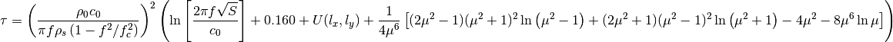
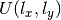

Non-resonant transmission coefficient by Leppington et al (1987).
| Parameters: |
|
|---|

See Craik, equation 4.22, page 101.
Note
The shape function  is assumed to be zero.
Note
The term B3*(C1 + C2 + C3) (see source) can be ignored except close to the critical frequency. We will nevertheless calculate them, and in case they become nan we replace the factor with zero.